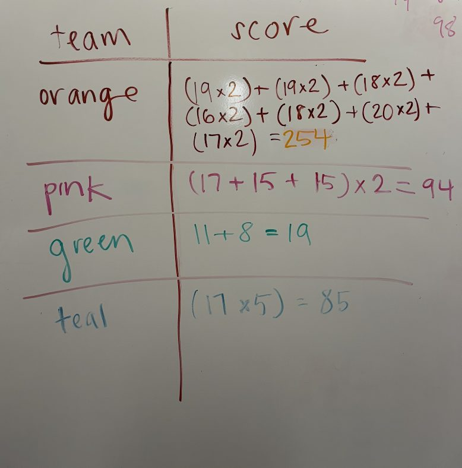
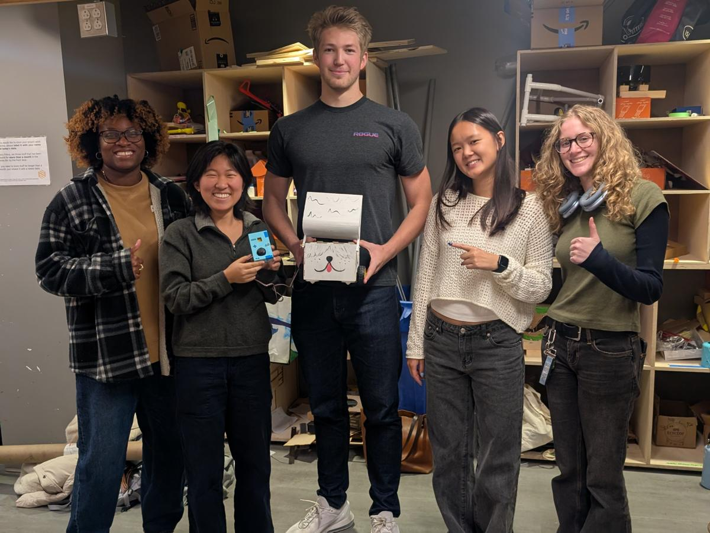
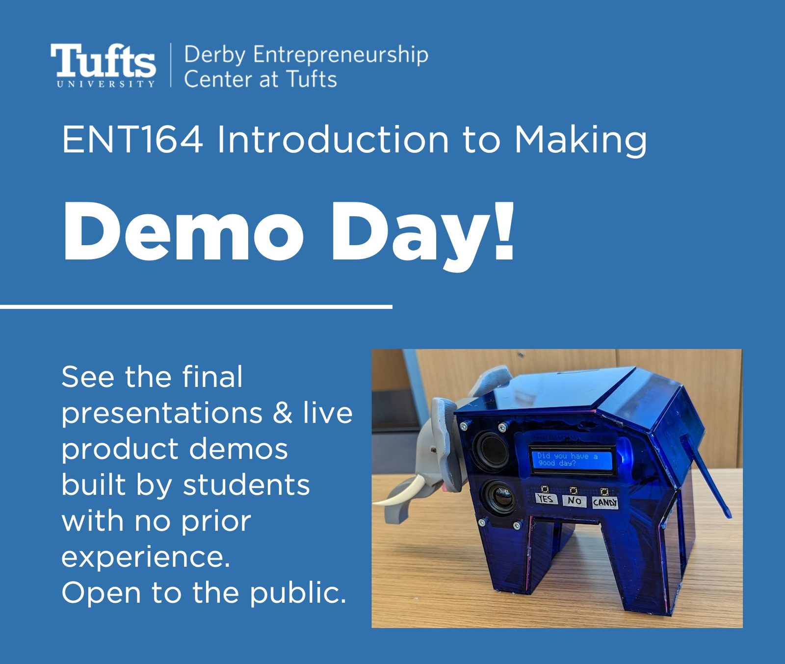
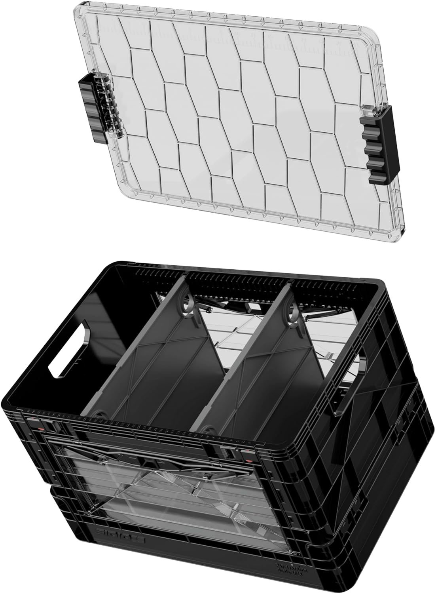
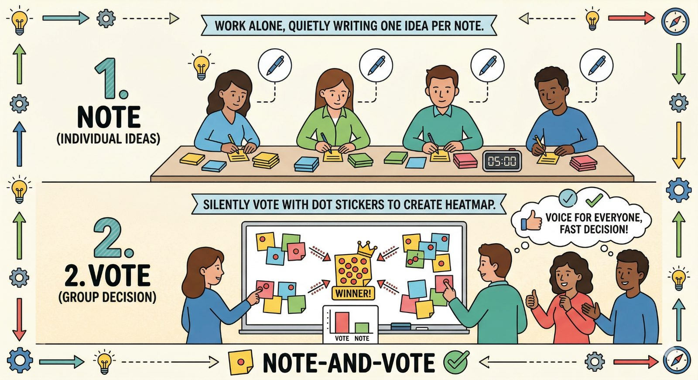
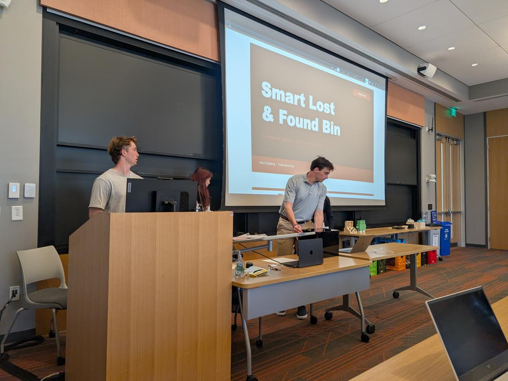
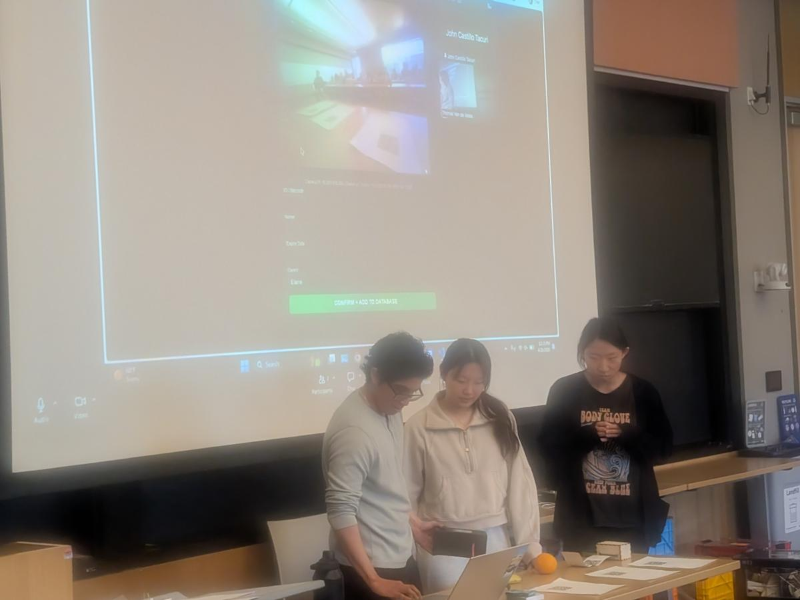

Robo Challenge wrap-up
The race is over — robots built from scratch, a full scoreboard, and awards. One last piece of admin before the final project begins.
The race
Teams moved as many balls as possible between the two lines, with robots they designed and built from scratch.
The awards
Scores are in, and the awards go out to the teams behind this semester's robots.
Carry it forward
Reflect on what worked, what didn't, and what you'd do differently — then bring that into the final project.


Mid-term reviews — last call
Midterm self review
Reflect on your own contributions to the Robo Challenge: what you built, how you worked with your team, and what you would do differently.
Midterm peer reviews
Give every teammate honest, specific feedback on the first half of the semester.
Five weeks to Demo Day
Every class from here moves you closer to a finished, demoable product.

Demo Day
Final presentations and live product demos, built by students with no prior experience. Open to the public — no registration required.
Thu, Dec 10 · 11:30 am · JCC 160. The finish line for your final project.
What your final project must include
Your concept proposal has to show how you'll hit every one of these — and which parts of the product use each method.
Solves a unique problem
The proposal makes the case for the problem and why it matters.
Laser cutting
At least one part designed as a 2D cut — and the proposal says where it fits in the build.
3D printing
Printed parts where they make sense: mounts, brackets, and custom shapes.
Microcontroller + sensors/actuators
A microcontroller with sensors and actuators, so the product senses the world and responds.
Smart API integration
AI or another external service wired into the device — a core maker skill.

The concept pitch
Next class — Thu, Nov 12 — every team delivers a 5-minute presentation covering:
Problem & opportunity
A clear articulation of the problem and why it matters.
Proposed product concept
A walkthrough of the concept and how it meets the final product requirements — bring sketches and a foam-core or other mockup.
Next steps
What you will build and test in the second half of the semester.
Note-and-Vote, then build
A silent brainstorm gets every voice into the room, then narrows fast to the ideas the team actually wants.
Step 1 · Note
Individually · 10 min · in silence
Write ideas
- Write 3 unique ideas
- One idea per sticky note
- Each idea must meet the criteria
Step 2 · Vote
As a team · 5 min · in silence
Post & vote
- Post every idea on the team wall
- Vote for your top 3 with round stickers — you can vote for your own
Step 3 · Discuss
As a team · 20 min
Discuss & decide
- Count the votes
- Discuss the top 3 ideas
- Decide what you'll pursue

How it ends: Demo Day
Photos from Demo Day — the finish line this five-week arc leads to.



What's due & next class
Close out the first half of the semester, then get ready to pitch.
Tomorrow · Fri, Nov 6 · noon
Midterm self review and midterm peer reviews — last call.
Next class · Thu, Nov 12
Final project concept presentations — 5 minutes per team.